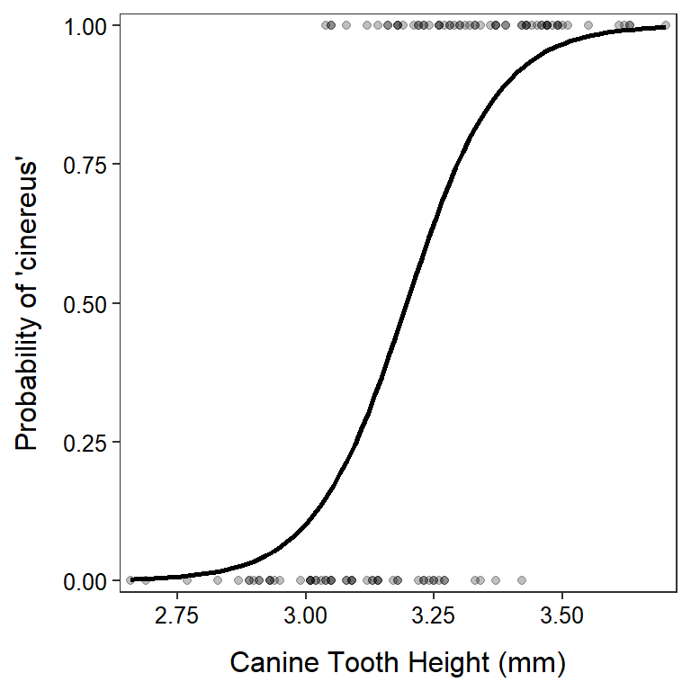

Note: Your answers to the questions below should follow the expectations for homework found here. Questions outside of class can be asked on the Module Assignments-Questions Teams channel (see link on homepage).
In this previous exercise you used these logistic regression results – logit(p)=6.430-0.330DOS – for the Levantino cultivar of cucumber to answer questions about cucumber marketability. Continue with this information to answer the questions below.
Researchers measured (among other things) the canine tooth height (cm) from two subspecies of Hoary bats (Lasiurus cinereus cinereus and Lasiurus cinereus semotus) found in Hawaii. Their primary question was to determine if canine tooth height (hereafter, just tooth height) differed between subspecies and, more importantly to them, could tooth height be used to predict the subspecies of bat. The parameter estimates of the logistic regression model used to predict subspecies (note that cinereus was considered a “success”) from canine tooth height (mm) is shown below. The fitted logistic regression is also shown in the figure below.
| Ests | 2.5 % | 97.5 % | |
|---|---|---|---|
| (Intercept) | -35.516 | -49.661 | -24.217 |
| canine | 11.112 | 7.589 | 15.524 |

Use this information to answer the questions below. Show your work.